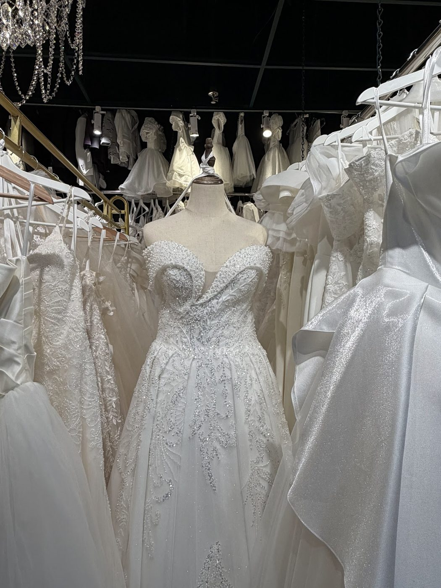
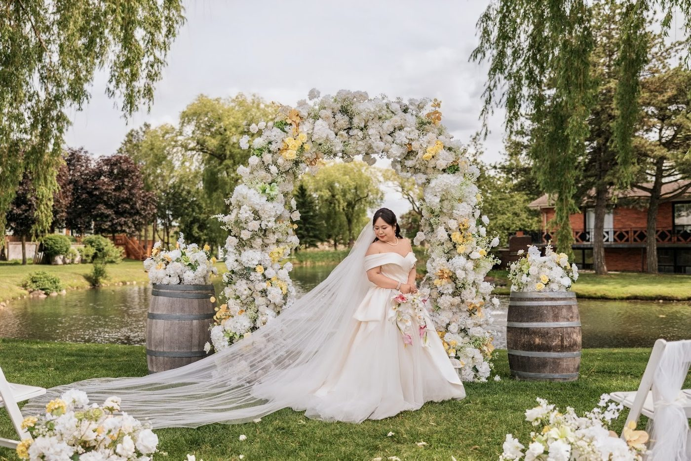

Woodside Square · Scarborough
Wedding gowns, veils and florals in Scarborough
Fashion Bridal is a bridal shop at 1571 Sandhurst Cir #215, at the Shoppers Drug Mart entrance of Woodside Square. The shop’s Google listing describes wedding gowns, alterations and wedding flowers. Reviewers write about finding a dress and veil here, and about Lesley and her team doing the flowers too.
- Wedding gowns
- Veils
- Alterations
- Wedding flowers
What the boutique offers
Wedding gowns and veils
Google lists Fashion Bridal as a bridal shop. The shop’s own listing description mentions wedding gowns and bridal accessories. Reviewers write about choosing a gown and a veil here, including for a garden ceremony.
Alterations
The official Google description says the boutique provides alterations. Alicia’s review says the owner “was very quick with the alterations.” Kathlene Parungao’s photos show gowns and veils in the shop.
Wedding flowers and décor
The listing description also names wedding flowers and décor. Vivian Luong wrote that she “used Fashion Bridal as [her] floral vendor,” from planning through setup and teardown. Google review topics include centerpieces.
Other wedding attire
The same official description lists mother-of-the-bride dresses and tuxedos. The shop’s own Google posts also talk about bridesmaid and occasion dresses. None of those posts, or this page, list prices.
These details come from Fashion Bridal’s official Google listing description, the shop’s Google posts, and customer reviews, all read Nov 23, 2026. The shop does not publish a price list here, and none are shown.

A boutique at Woodside Square
The shop is in Woodside Square, at 1571 Sandhurst Cir #215, by the Shoppers Drug Mart entrance. The mall directory lists Fashion Bridal at unit B12 with the same phone number that is on Google, (416) 455-8277.
The shop’s own Google listing description says it has over 22 years of wedding industry experience, and that finding a gown “is more than shopping — it is a special moment that deserves care, honesty, and personal attention.”
Reviews and the shop’s Google posts name the owner as Lesley. Some reviews spell the name Leslie. The quotes below are left as the reviewers wrote them.
What customers say
4.7 ★ from 47 Google reviews (checked Nov 23, 2026). Quotes are word for word. Each one says where it was read: on the Google listing itself, or on a public page that copies reviews.
★★★★★
I said yes to the dress here! Lesley picked out for me the most STUNNING spot-on dress and veil that matches my look, my size, and my garden venue. Out of all the bridal shops I went to, no one else gave as much care and attention to detail as Lesley. The prices are also very reasonable and the gowns are great quality. I highly recommend to all brides, please come to this store!
★★★★★
I used Fashion Bridal as my floral vendor and Lesley and her team did such an amazing job! I didn’t have to worry about anything related to flowers. She was able to handle everything from inception, set up, transfer, and teardown. They did such a wonderful job capturing the style and colours I wanted and their package included everything I asked for and more! Would definitely recommend to anyone looking for a floral vendor.
★★★★★
My experience with Fashion Bridal was excellent throughout the entire process. The owner Lesley is very knowledgeable, kind, and willing to go the extra mile to make sure you have everything you need. One of the dresses she picked at my first appointment turned out to be the one, and she was very quick with the alterations as well.
I’m very grateful for all of her help leading up to and on the wedding day, and would definitely recommend her and the store!
★★★★★
If I could give 100 more stars, I would. Leslie is a very sweet lady and very helpful. She cares about the customer, and you'll feel it immediately when you talk to her. She will ask for your picture and inspo and will genuinely take the time to handpick the BEST dresses for your personality and look. Thank you for your help. My friend will now have the best day of her life.
In the boutique, and at the wedding
Real photos from the shop’s public Google listing and from customer reviews. Listing photos with promotional text overlays were left out. Tap to enlarge.
Visit the shop
1571 Sandhurst Cir #215
Woodside Square, Shoppers Drug Mart entrance
Scarborough, ON M1V 1V2
| Monday | 10:30 a.m.–7:30 p.m. |
|---|---|
| Tuesday | 10:30 a.m.–7:30 p.m. |
| Wednesday | 10:30 a.m.–7:30 p.m. |
| Thursday | 10:30 a.m.–7:30 p.m. |
| Friday | 12–7:30 p.m. |
| Saturday | 10:30 a.m.–7:30 p.m. |
| Sunday | 11 a.m.–6:30 p.m. |
Hours are from the Google listing, checked Nov 23, 2026. A Wheree copy of the listing, fetched the same day, lists Friday opening at 10:30 a.m. instead of noon; the other days match. This page uses Google. Please call if you are coming Friday morning or close to opening or closing.